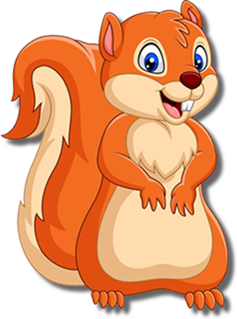

<ion-header>
  <ion-buttons style="left: 0;" slot="start" class="header-back-button" mode="md">
    <ion-back-button style="color: white;" icon="chevron-back"></ion-back-button>
  </ion-buttons>

  <ion-toolbar style="position: fixed;">
    
    <app-explore-container headerColor="white"></app-explore-container>
    
  </ion-toolbar>

</ion-header>

<ion-content (click)="openFun()">

  

  
  
  

</ion-content>
